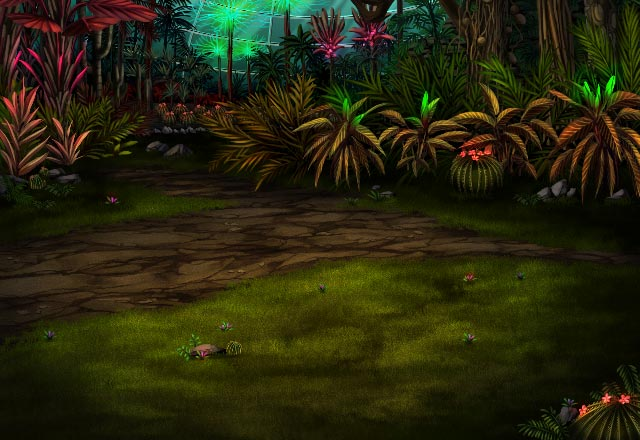

パリス
最初の溶鉱炉、川を挟んで植物園。 先には廃棄場っぽいのや都市も見えるわね。
パリス
本当、ここの魔神はこの地を どうしたいのかしら？
グラデンス
魔神は生まれながらに強大な力を持つため 人の技術に興味を示すことは少ない。
グラデンス
そもそも、人の技術は人が弱いゆえに 磨かざるを得なかったものじゃからな。
グラデンス
なぜ、この地を支配する魔神、 モルデリムが人の技術に興味を持ったのか。
ルジーナ
ケッ、モーラが嫌いそうな魔神じゃねーか。 となるとヤツの目的は……。
ルジーナ
まあいい、ヤツの動きよりも 気になることは他にもある。
セリア
ブツブツうるさいわね！ ホラ、さっさと行くわよ。
セリア
こんな所で話していても しょうがないわよ。
ルジーナ
セリアって歳を取ったら オーンみたくなると思わねーか？
パリス
Shou-chan、答えちゃダメよ。 きっとどちらも面倒なことになるわ……。
ルジーナ
チッ、この手の罠は またミーファとかいうアイツか！
オーン
この程度でうろたえるな！ たかが石ころ、叩き割ればいい！
ルジーナ
クソッ、各自散開して避難しろ！ まとまって動くと動きが鈍る！
ルジーナ
目的地は気象管理塔ってわかってんだ！ 勝手に動いて勝手に向かいやがれ！
セリア
Shou-chan、グズグズしてないで アンタも急ぐのよ！
パリス
Shou-chan、あなたなら大丈夫だと 思うけど気を付けてね！
グラデンス
フム、近くにミーファがいるのか？ いや、もうおらんじゃろうな……。
？？？
さすがにこの程度じゃ 誰もやられたりしないか。
カル
お前たちにまとまって動かれると 面倒なんで、
カル
ミーファさんと協力して 少しだけ罠を仕掛けさせてもらっただけさ。
カル
確かに今のは悪かったなって 少しは思ってるよ。
カル
ただ、全員大丈夫だろうって 確信はあったんだぜ。
カル
実際、他のみんなもうまく逃れた みたいだしな。
カル
Shou-chan、 話はここからが本題だ。
カル
俺はミーファさんからイシュグリア先遣隊の 話を色々と聞いた。
カル
俺もグラデンスの爺さんたちは確かに 恨まれるだけのことをやったと思うよ。
カル
ただ、爺さんにも爺さんなりの理由が何か あったんじゃないかと思うけどな。
カル
あ、ミーファさんには俺の境遇は 話してある。
カル
最初少し警戒されたけど、お前たちにも 話していないある話をしたら
カル
あの人、見かけはアレだけど、 根は良い人っぽいぜ。
カル
それに、アレで昔は可愛い顔を してたらしいしな。
カル
他の人たちにすごく良くしてもらった って懐かしそうに話してたよ。
カル
まあ、だからこそ昔の仲間たちのことで 召喚老たちを恨んでるんだけどな。
カル
だから、俺としてはお前たちに 早くエルガイアに戻ってほしいんだ。
カル
そうすればグラデンスの爺さんと ミーファさんが戦うこともない。
カル
前にも話したけど、ティリスのことは 俺が必ず何とかする。
カル
ハハッ、わかってるんだけど どうしても言いたかったんだよ。
カル
まあいい。俺がお前たちより早く 俺の目的を達成すればいいだけだからな。
カル
なあ、Shou-chan。 お前はアクラス召喚院ってどう思う？
カル
俺はグラデンスの爺さんに育てられた からかもしれないけど、
カル
国とか政治とかのしがらみなしに、 色んな身分の人が活躍できる組織。
カル
しかも、力の無い人を守る活動が 主な活動だ。
カル
もちろん、グランガイアで手に入る物を 半独占的に入手できるから
カル
それでも、アクラス召喚院の本質は 人を守ることだと思う。
カル
でもさ、やっぱりわからないことも たくさんあるんだよ。
カル
グラデンスの爺さんたちが 何かを隠していること。
カル
俺はそんなことどうでもいいかなって 思ってたんだけど、
カル
ミーファさんから先遣隊の人たちの 話を聞いたら
カル
俺たちも爺さんたちからきちんと 聞くべきじゃないかと思い始めたんだ。
カル
やっぱり何も知らないまま 命は賭けられないからな。
カル
悪い、今の話は俺の目的とは あんまり関係なかったな……。
カル
じゃあ、Shou-chan、 俺はそろそろ行くよ。
カル
俺の目的ももう少し準備ができたら きちんと話すからさ。
カル
だから、お前たちはあんまり急いで 先に進まないでくれ。
カル
オーンさんが出てきたから 一気に進んじまうんじゃないかって
眼鏡の男
信頼し合う幼馴染の２人……。 良いですねー。
眼鏡の男
私も久々に会いたくなりましたよ。 幼馴染にね。